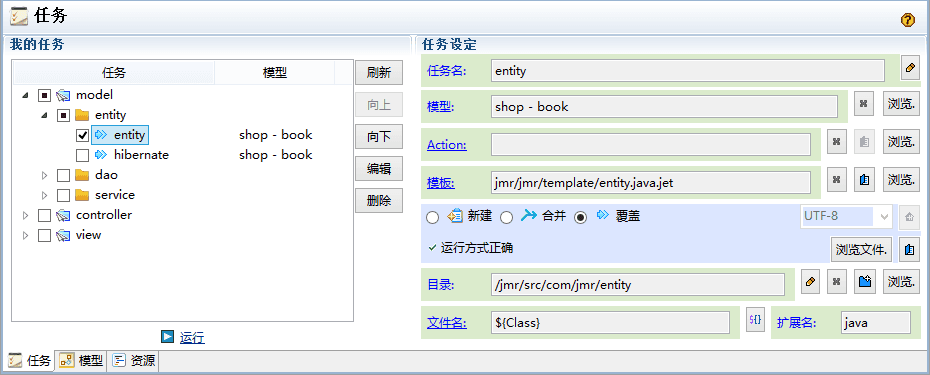

entity(entity.java.jet) - 实体类
功能描述
生成java实体类（可作为其他语言的实体类的参考）。
阅读前需要了解的知识：
任务
模型
标签
任务和模型

当前任务的模型组名称是shop，它包含一个java实体模型book，book的relation值是one；
我们在模板中会通过<entity>得到它。
关于本demo的模型结构，详细内容请点击：模型结构
有2种方式设置模型：
- 选择模型组（如shop）：<entity>中需要指定relation。这种选法一般应用于模板中需要得到多个模型，比如many-to-one many-to-many等情况。

- 选择模型（如book）（本例选择）：<entity>中无需指定relation，这种方法用于模板只需要单个模型。当然，这种方式也可以指定relation。

-
模板：entity.java.jet
-
文件名：${Class}
我们为这个模型新设了以下属性：
Class：头字母大写的名称，可以作为类名或者需要头字母大写的部分，它的值是"Book"。
class：头字母小写的名称，可以作为头字母小写的部分，它的值是"book"。
menu：界面菜单栏的名称，它的值是"Book"。
- 扩展名：我们生成的是java实体类，所以扩展名为java
小贴士：可以在此处得到文件名${}的一些选项。
生成包路径、导入类和类名

- 使用java:package自动得到当前包名。
- entity设置新设变量object指向被选中的模型。
- 使用java:class得到类名，类名为任务的文件名：${Class}的值，为Book。
- 使用for循环object字段集合fields，得到每个字段field的fullType，其中duplicate属性设置为false，如果循环的内容一样，则不再重复输出。此处java.lang.Integer相同，没必要重复输出。
鼠标放到fullType上可以看到具体信息。
运行结果，可以看到java.lang.Integer没有被重复输出
生成属性和构造方法
- 使用for循环生成字段，结构是：private 字段类型 字段名。
- 使用java:class生成类名，生成空的构造方法。
- 使用java:class生成类名，for循环生成字段的参数列表，结构是字段类型+字段名，for循环生成字段的赋值，结构是this.字段名 = 字段名。
模型中的name和type
运行结果
生成get/set方法
- 使用for循环字段，输出get和set方法。
- get方法的格式是：
public 字段类型 get字段名(头字母大写){
return 字段名;
}
public void set字段名(头字母大写)(字段类型 字段名){
this.字段名 = 字段名;
}
运行结果
扩展内容
类似的，也可以重写hasCode和equals方法，有兴趣的小伙伴们可以试着自己写。
其它语言的实体类也无非就是定义属性，构造方法，get/set方法等，写法可以参考上面。